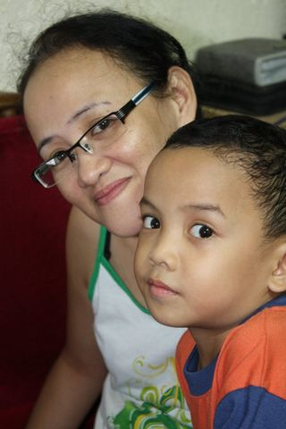
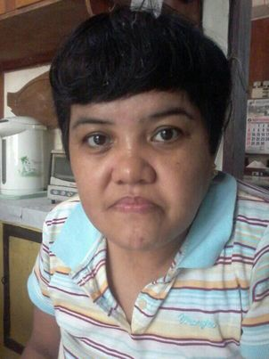
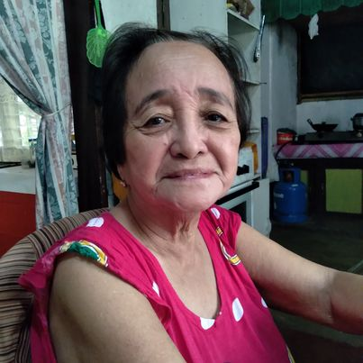
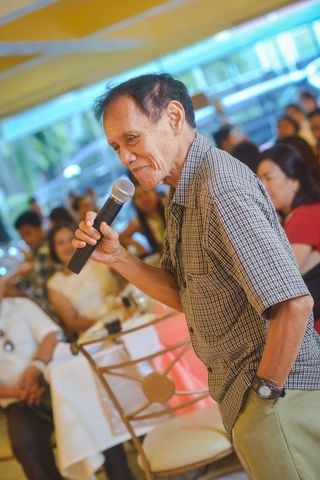

These are the people I care about the most.
My one and only mom, mama Jo Ann. She's always been there for me, no matter what. Her love, kindness, and unwavering support mean the world to me. I am so grateful for everything that she do and the sacrifices that she had made for me. She is just not my mom but also my dad, my best friend, and my role model. I love her more than words can express, and I will always cherish the moments that have spent together. I am so thankful because God has given me the best mom in the world.
My Tita, Pinky. She is my mother's sibling, when I was still young she was the one who always took care of me for my mother's absence because of work. She is the most resilient and inspiring people I know. Her strength, courage, and positive attitude are a constant source of inspiration for me. She teaches me everyday to never take anything for granted and to appreciate every little moment in life.
My Lola, Lola Aurora. She is the cornerstone of our family. Her love, kindess, and guidance have shaped us into the people we are today. Her wisdom and life experience have been invaluable to us, and we are grateful for every moment we had spent with her. She jave taught us the importance of family, hard work, and perseverance. Her selflessness and generosity are unmatched, and we are blessed to have her in our lives. She is just not our grandmother, but also our role model, mentor, and friend.
My Lolo, Lolo Wilfredo. He is a true legend in our family. His kindness, wisdom, and humor have brought us so much joy and happiness over the years. He is a role model to us all, and we are grateful for the values he have instilled in us. His hard work, perseverance, and dedication have been an inspiration to us, and we are proud to be part of his legacy.